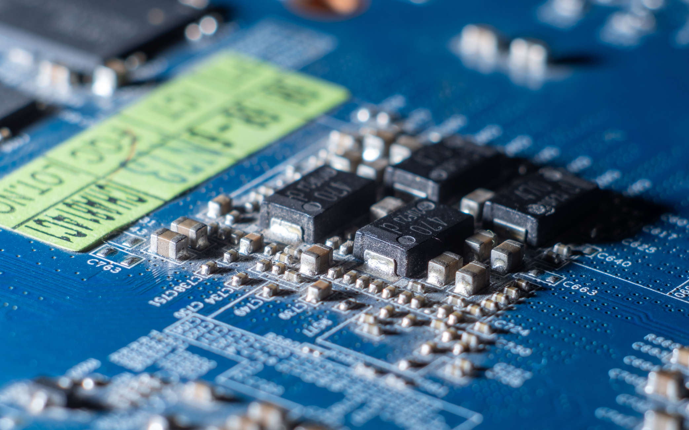

Streamlining Web Project Development!
Techsync is a creative agency specializing in web design, branding, and digital content services. We provide our clients with a one-stop shop for all their online presence needs. With our own design, marketing, and technical departments working in tandem, tailoring your virtual identity has never been easier!

Delivering The Best, As Fast As Possible!
| Department | Services | Average Timeline |
|---|---|---|
| Design | Visual Research | 3 to 7 Days |
| Concept Ideation | 1 to 2 Weeks | |
| Visual Development | 2 to 3 Weeks | |
| Marketing | Competitor Benchmarking | 1 Week |
| Search Engine Optimization (SEO) | 1 Week | |
| Technical | Development & Coding | 2 to 3 Weeks |
| UI & UX | ||
| Launch & Deployment | 1 Week | |
| Managed IT Services | According to Contract | |
| Average Delivery Time: 8 to 16 Weeks | ||